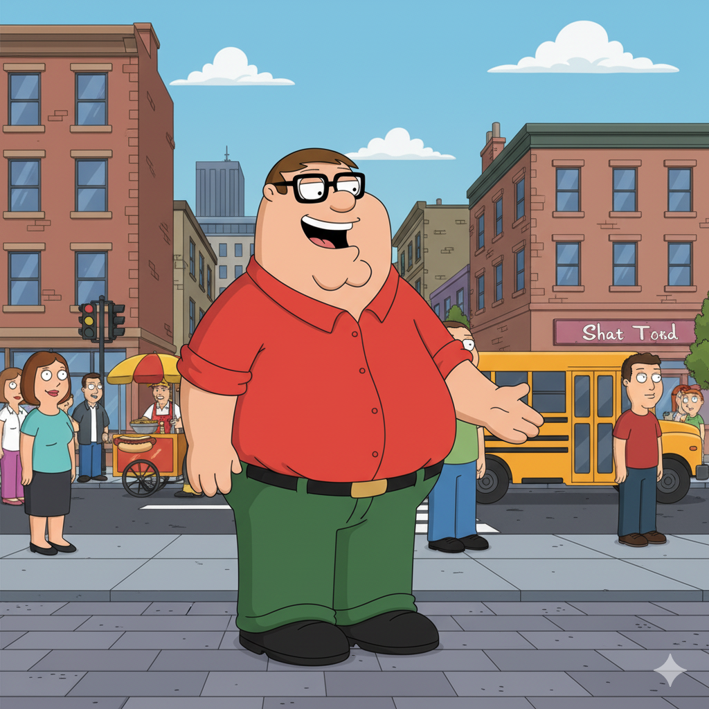
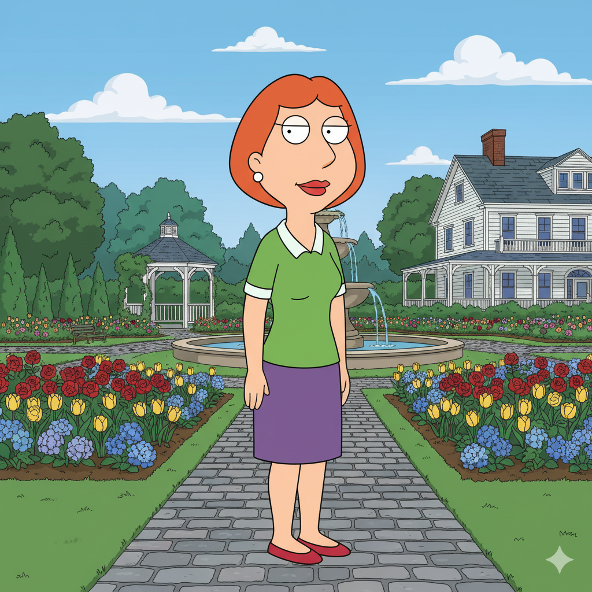
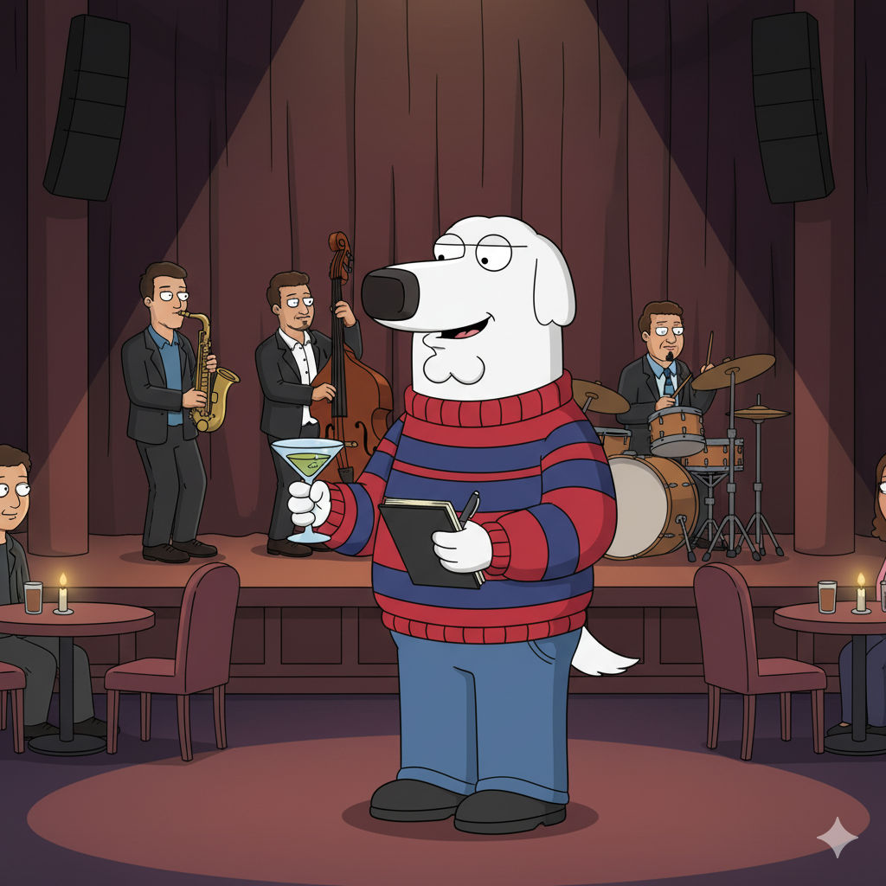

Peter Griffin
Peter is the overweight, immature, and impulsive head of the family, known for his lack of intelligence and frequently disorderly type of behavior, however, he is absolutely committed to his family and loves spending time with his dog, Brian, the most.

Lois Griffin
Lois is Peter's wife, a stay, at, home mom from a rich background, who is usually trying to be the reason through her voice but has a crazy side that is sometimes a little dark, and she works to keep the house, their home which is a total mess, somewhat orderly.
Stewie Griffin
Stewie is the one, year, old son, a genius baby with a refined British accent, who at the start was a sociopath and a genius, but now has become a more colorful character and thus he and Brian have developed a close, daring relationship.

Brian Griffin
Brian is the family's talking, martini, drinking dog, who mostly takes the role of the intellectual and liberal moral guide of the house, however, his own dreams of becoming a writer and frequent pride pomp that leads to hypocrisy and personal failures.